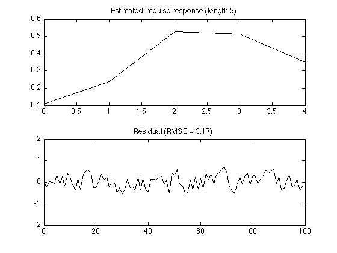

System identification
Estimate an LTI system from input-output data using least squares.
Ivan Selesnick selesi@poly.edu
Contents
Start
clear
close all
Load data
load data.txt; % First column: input. Second column: output whos x = data(:, 1); % input signal y = data(:, 2); % output signal N = length(y); n = 0:N-1;
Name Size Bytes Class Attributes data 100x2 1600 double
Display data
figure(1) clf subplot(2, 1, 1) plot(n, x) title('Input signal') YL1 = [-2 2]; ylim(YL1) subplot(2, 1, 2) plot(n, y) title('Output signal') ylim(YL1)
Least squares solution (length 5)
M = 5; % M : length of impulse response X = toeplitz(x, [x(1) zeros(1, M-1)]); % X : convolution matrix h = X \ y % h : impulse response estimate
h =
0.1086
0.2395
0.5281
0.5150
0.3517
figure(1) subplot(2, 1, 1) plot(0:M-1, h) title(sprintf('Estimated impulse response (length %d)', M)) r = y - X * h; % r : residual RMSE = sqrt( sum(r.^2) ); subplot(2, 1, 2) plot(n, r) title(sprintf('Residual (RMSE = %.2f)', RMSE)) ylim(YL1)
Least squares solution (length 10)
Increasing the impulse response leads to a smaller residual
M = 10; % M : length of impulse response X = toeplitz(x, [x(1) zeros(1, M-1)]); % X : convolution matrix h = X \ y % h : impulse response estimate
h =
0.1021
0.2076
0.4910
0.5052
0.3843
0.3010
0.0996
0.1115
0.0024
0.0083
figure(1) clf subplot(2, 1, 1) plot(0:M-1, h) title(sprintf('Estimated impulse response (length %d)', M)) r = y - X * h; % r : residual RMSE = sqrt( sum(r.^2) ); subplot(2, 1, 2) plot(n, r) title(sprintf('Residual (RMSE = %.2f)', RMSE)) ylim(YL1)
RMSE versus impulse response length
M = 20; for m = 1:M % m : impulse response length X = toeplitz(x, [x(1) zeros(1, m-1)]); h = X \ y; err(m) = sqrt(sum( (X*h - y).^2 )); end figure(1) clf plot(1:M, err, '.-') xlabel('Length of impulse response') ylabel('RMSE') title('RMSE vs impulse response length');